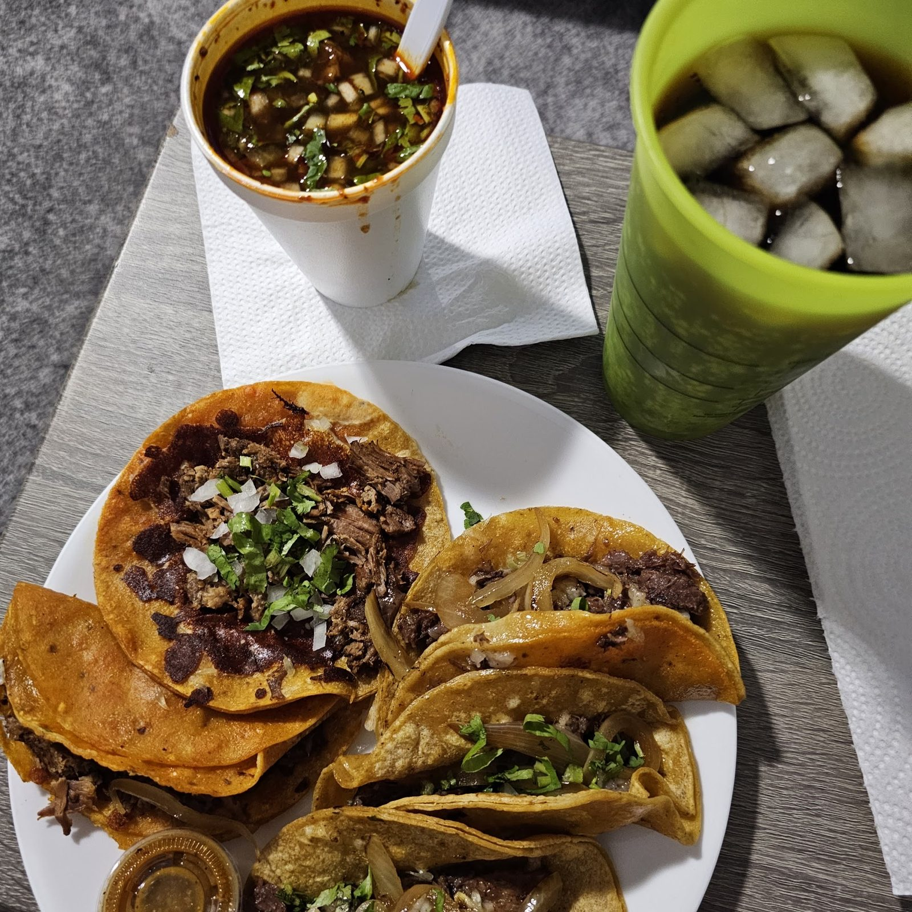

Quesabirria
Griddled birria quesadillas with crisp, melted cheese. Mini quesabirrias come topped with plenty of meat.
Birria, quesabirria and consomé with plenty of meat. Mini tacos too. Wednesday to Sunday nights.

Where to find us
8630 US-90, San Antonio, TX 78227
Mon ClosedTue ClosedWed 6–11 PMThu 6–11 PMFri 6–11 PMSat 6–11 PMSun 6–11 PM
DirectionsOpen 6 to 11 PM
Come hungry
Open Wednesday to Sunday, 6 to 11 PM. Closed Monday and Tuesday. Easy in and out.
Order these
Start here.
Griddled birria quesadillas with crisp, melted cheese. Mini quesabirrias come topped with plenty of meat.

Red birria tacos with lime and cucumber, plus consomé with chunks of meat.

Al pastor shaved off the trompo, and tacos de cabeza.

The house specialty


4.8 ★ · 71 Google reviews
if you are looking for real Mexican flavor, man ive been eating this tacos since they open outside the firestone on culebra close to Goodwill. well the birria is out of this world one of the best birrias 5 miniquesi birrias (bien servidas) topped with tons of meat dont let the size fool you they will get you full including the consome wich most of the time comes with tons of chunks of meat also.
The mini tacos are the best! So fresh and so good! The owner and his family are so nice. I will always be a loyal customer! As a business owner myself, I appreciate good service and yummy food! I highly recommend, everything is so good!
We have been the last 3 nights in a row! So happy we finally found a great Taco spot! We’ve been to 7 different highly rated tacos trucks and have been disappointed every time. The owner is absolutely awesome and we are so more than happy to support his business and be extremely loyal customers.
Meet the crew
Lit up at night, with al pastor turning on the trompo.
Family-run, friendly, and glad to see you back.